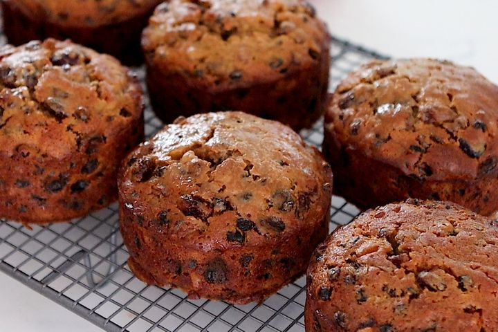

Mini Marsala Fruit Cake

Description
This Mini Marsala Fruit Cake is a rich, moist, and aromatic delight made with dried fruits soaked
in Marsala wine, a hint of warm spices, and a buttery cake base.
These mini cakes are perfect for gifting,
serving with tea, or enjoying as a festive dessert. The Marsala wine adds depth and elegance
to the traditional fruit cake flavor.
Ingredients
Fruits (Prepare a day ahead if possible):
- 1/3 cup raisins
- 1/3 cup currants (or chopped dates)
- 1/3 cup dried cranberries or chopped dried apricots
- 1/3 cup chopped candied peel (optional)
- 1/2 cup Marsala wine (sweet or dry, as preferred)
Cake Batter:
- 1 cup all-purpose flour
- 1/2 cup butter (softened)
- 1/2 cup brown sugar
- 2 eggs
- 1 tsp vanilla
- 1/2 tsp cinnamon
- 1/4 tsp each: nutmeg, allspice (optional), salt
- 1 tsp baking powder
- 2 tbsp milk (if needed)
Steps
- Soak Fruits:Mix fruits with Marsala and soak overnight.
- Prep Oven & Pans:Preheat to 160°C (320°F). Grease mini cake tins or muffin pan.
- Make Batter: Cream butter and sugar. Add eggs, vanilla, and spices.
Fold in flour, baking powder, salt, then soaked fruits.
- Bake: Spoon into pans, top with nuts/cherries. Bake 25–35 mins. Cool on rack.
- Finish: Optionally brush with Marsala. Wrap and store. Best after 1–2 days.
Home